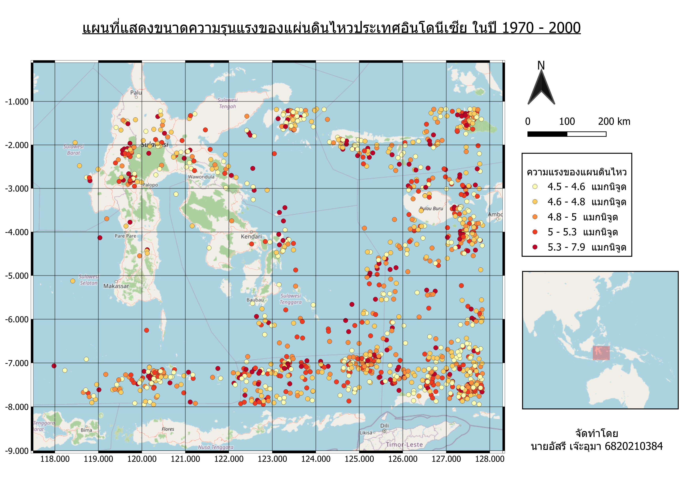
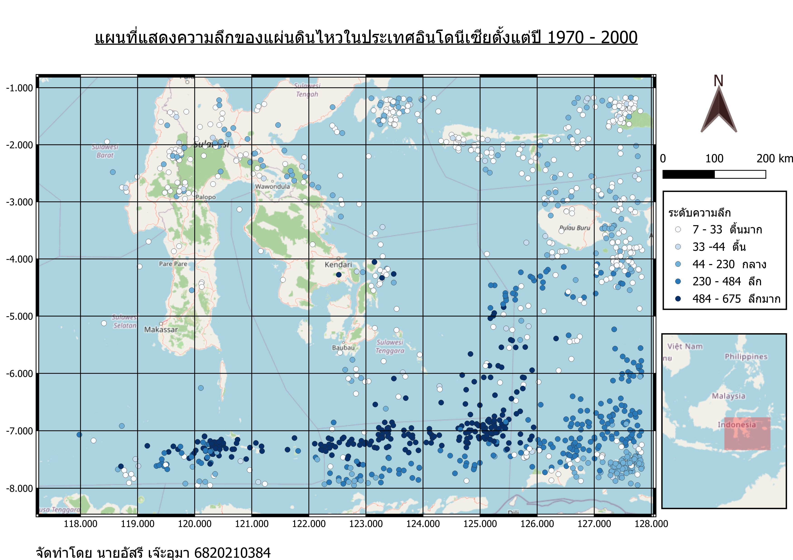

1. แผนที่แสดงขนาดความรุนแรงของแผ่นดินไหว
แสดงการกระจายตัวและจำแนกขนาดความรุนแรงของแผ่นดินไหว (แมกนิจูด) ในพื้นที่ศึกษา ประเทศอินโดนีเซีย ระหว่างปี 1970 - 2000

รูปที่ 1: แผนที่แสดงขนาดความรุนแรงของแผ่นดินไหว
2. แผนที่แสดงการกระจายตัวจำแนกตามช่วงเวลากลางวันและกลางคืน
วิเคราะห์จุดเกิดเหตุแผ่นดินไหวว่าเกิดขึ้นในช่วงเวลากลางวัน (จุดสีเหลือง) หรือช่วงเวลากลางคืน (จุดสีดำ) เพื่อดูรูปแบบการเกิดตามเวลา

รูปที่ 2: แผนที่แสดงการกระจายตัวจำแนกตามช่วงเวลากลางวันและกลางคืน
3. แผนที่แสดงระดับความลึกของแผ่นดินไหว
แสดงระดับความลึกของจุดศูนย์กลางแผ่นดินไหวตั้งσόงแต่ระดับตื้นมาก ตื้น กลาง ลึก จนถึงลึกมาก เพื่อวิเคราะห์โครงสร้างทางธรณีวิทยา

รูปที่ 3: แผนที่แสดงระดับความลึกของแผ่นดินไหว